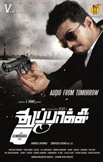

THUPPAKKI

Thuppakki is a Tamil action thriller film
Hero : Vijay as Jagadish Dhanapal
Heroine : Kajal Aggarwal as Nisha
Supporting role : Sathyan as Balaji
Director : AR Murugadoss
Producer : S.Thanu
Writter : AR Murugadoss
Music Composer : Harris Jayaraj
Editor : A.Sreekar Prasad
Cinematography : Santosh Sivan